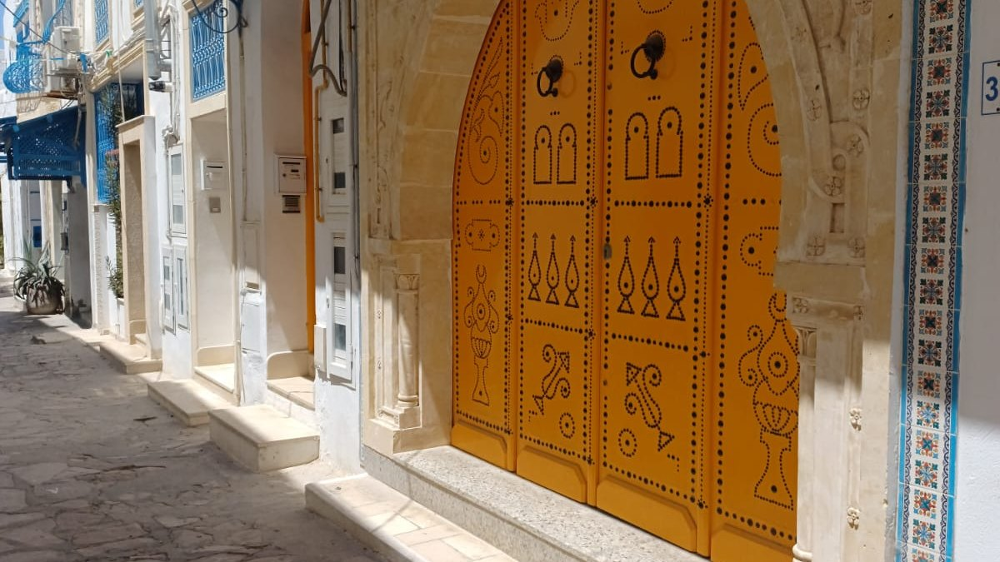
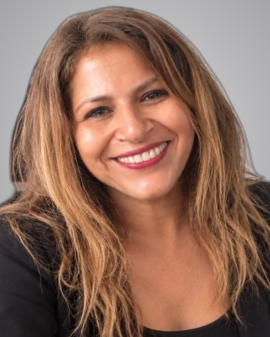

L’expérience du terrain, la curiosité du digital et le goût des projets qui ont du sens.


36 ans dans l’univers du tourisme
Depuis 36 ans, j’évolue dans l’univers du tourisme. Un secteur passionnant qui m’a appris à écouter, à anticiper, à organiser et surtout à comprendre ce qui fait la différence dans une expérience client.
De la conception de voyages sur mesure à la gestion des transports et des vols charters, jusqu’à mes fonctions de responsable d’agence en Guadeloupe, mon parcours s’est construit au fil des projets, des responsabilités et des rencontres. J’y ai développé une conviction qui m’accompagne encore aujourd’hui : derrière chaque réussite, il y a une bonne compréhension des besoins, une organisation solide et une attention sincère portée aux personnes.
Une nouvelle perspective
Aujourd’hui, j’élargis mon champ de compétences au marketing digital, à la communication et à l’intelligence artificielle.
Cette évolution n’est pas une rupture avec mon parcours. C’est une nouvelle manière de l’enrichir, de questionner mes habitudes et d’explorer d’autres façons de concevoir des projets, de créer du contenu et de valoriser une activité.
J’aime comprendre comment les outils fonctionnent, expérimenter, apprendre et transformer une idée en quelque chose de concret. La stratégie, la création de contenu, la conception web et les nouveaux usages de l’IA sont autant de terrains d’exploration qui nourrissent cette démarche.

« Ce qui m’intéresse, ce n’est pas le digital pour le digital. C’est ce qu’il permet de construire lorsqu’il répond à un besoin réel et qu’il reste au service d’une intention. »
Ce que j’apporte à un projet
Quatre savoir-faire forgés en 36 ans de tourisme, que j’applique aujourd’hui aux projets digitaux. Choisissez-en un pour voir comment il passe du terrain à l’écran.
{{q.t}}
{{q.d}}
Ma façon de voir les choses
Je crois aux projets qui associent réflexion et action, créativité et méthode, technologie et intelligence humaine.
L’intelligence artificielle ouvre des possibilités fascinantes, à condition de conserver le discernement nécessaire pour bien l’utiliser. Les outils peuvent nous aider à aller plus loin, mais la compréhension, le regard critique et la qualité de la relation restent essentiels.
C’est cette complémentarité qui m’intéresse : savoir tirer parti des nouvelles technologies tout en gardant ce qui a toujours guidé ma façon de travailler, l’écoute, l’exigence et le sens du concret.
Place à la pratique. Après six mois de formation, je mets mes nouvelles compétences à l’épreuve du terrain, avec un objectif clair : faire dialoguer mon expertise du tourisme avec les possibilités du marketing digital et de l’IA.
Parce qu’évoluer, ce n’est pas effacer ce que l’on a construit. C’est s’en servir pour imaginer la suite.
- 30 octobre 2026Fin de la formation théoriqueChef de projet marketing digital, Digital Campus Paris
- Dès le 2 novembreStage en marketing digitalMettre en pratique, sur le terrain, tout ce que j’ai appris
- 30 décembre 2026Fin du stageLa double compétence tourisme et digital, validée